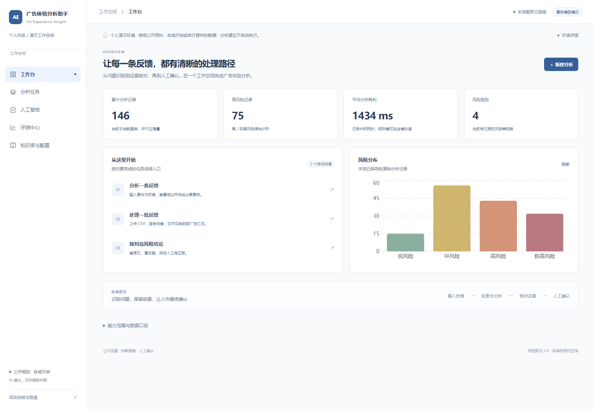
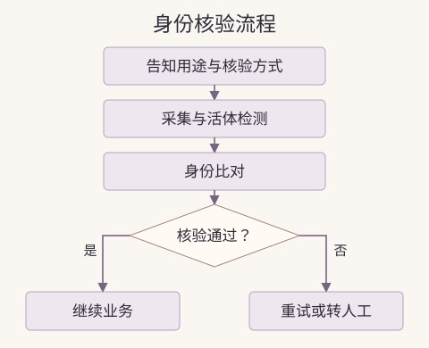
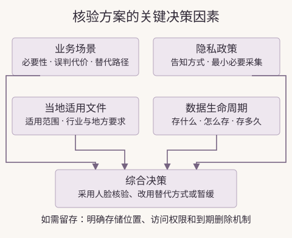
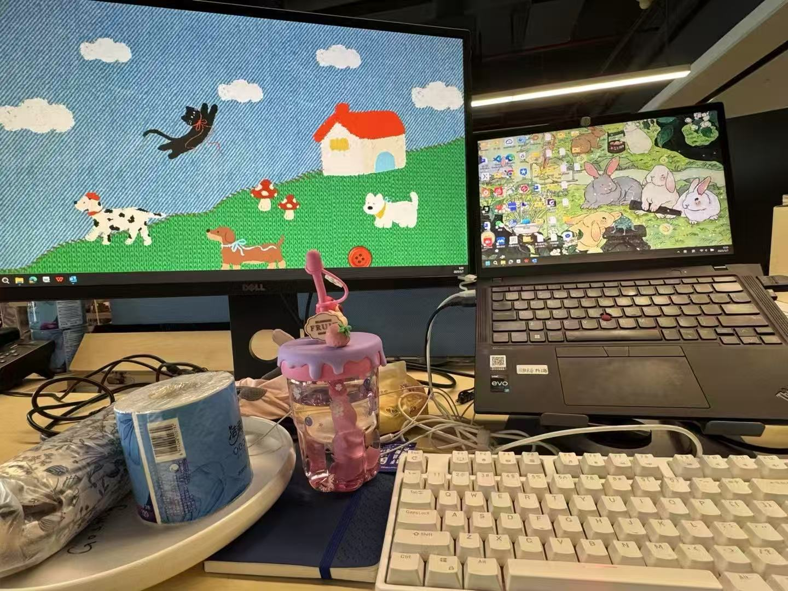
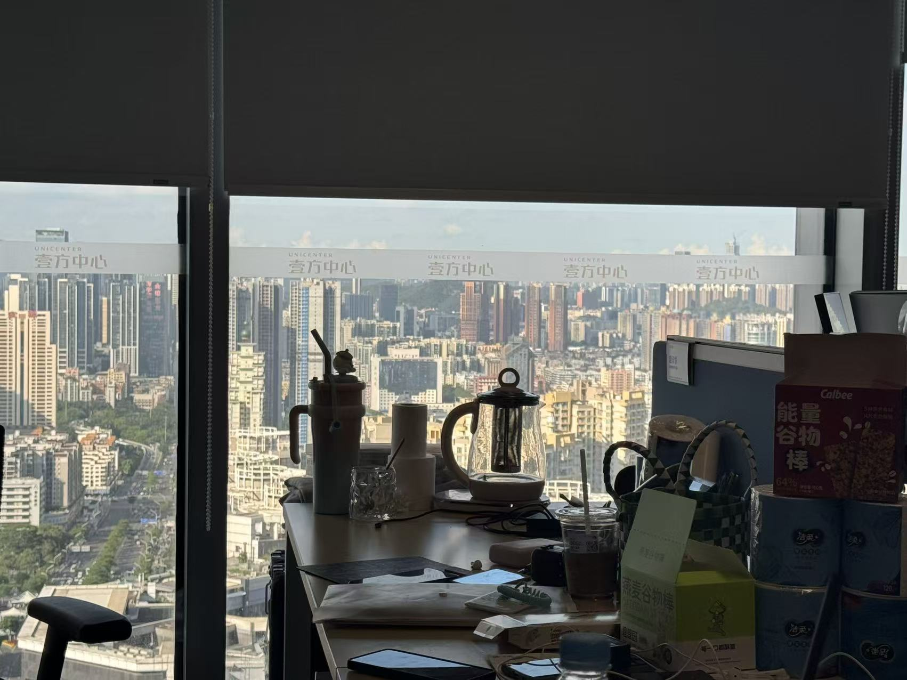
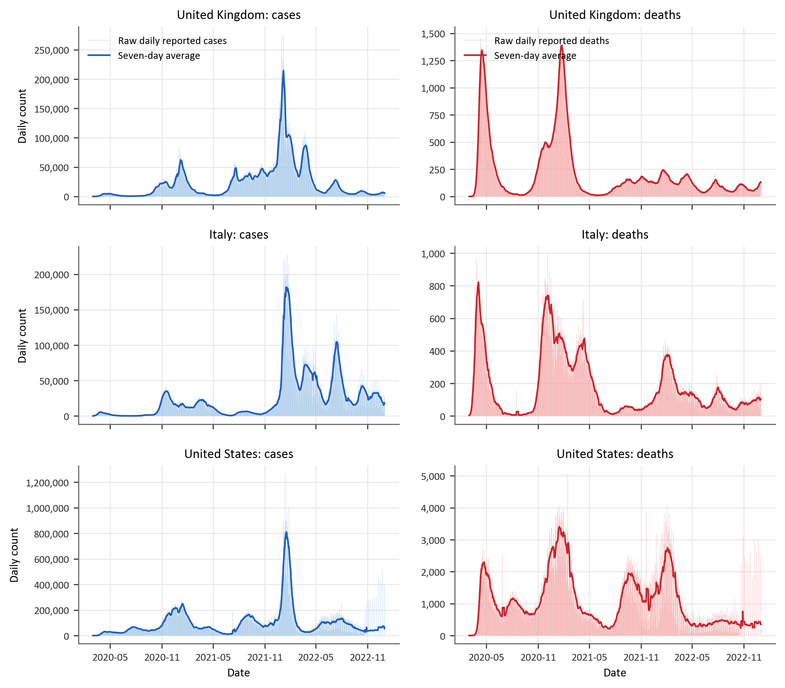
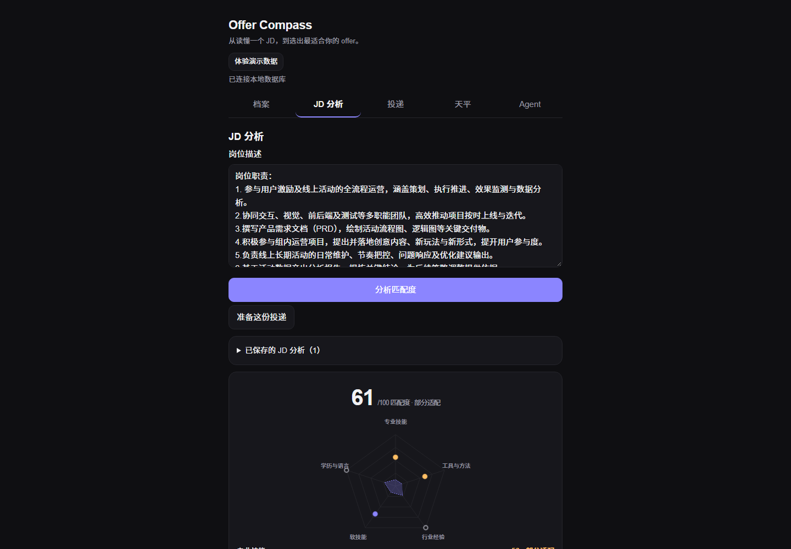

BEng Cyberspace Security
Xiamen University
Ziyue Yang
杨子越
Technology · Data · Product
Profile
I focus on data analysis, product design, and AI applications—finding real problems, testing assumptions, and helping useful ideas move into practice.
My journey is a sea of stars ✨
Xiamen University
National University of Singapore
The University of Manchester
Featured work
Internship · Product analytics
Turned advertising experience feedback into product requirements, measurable risk patterns, and strategy recommendations across return journeys and creative quality.

Product · AI application
A working prototype that structures advertising complaints, retrieves supporting rules, assigns traceable risk labels, and routes uncertain cases to human review.
Experience
Qingyang Big Data · Gongqingcheng Qingchuang Group


vivo Mobile Communication (Shenzhen)


Campus and community
Served as a student union department head and departmental Youth League branch department head, coordinating student work and team activities.
Participated as a debate team member, developing structured reasoning, rapid response, and collaborative argument building.
Completed 109 volunteer hours, including academic tutoring for secondary-school students in Haicang, Xiamen.
Received first-class academic excellence scholarships for three consecutive years, plus social-practice and student-work awards.
Projects
Each project is kept separate here: its own problem, method, evidence, and limits. Open a project to see the full reasoning and image gallery.

Research · Data science
United Kingdom, Italy, and United States · R · GAM-SEIR · sensitivity analysis · official comparison
Product · AI application
Next.js · FastAPI · SQLite · local retrieval · rules · model analysis · human review

Product · AI agent
Python · SQLite · Application Graph · Word/PDF · evaluation · human approval
More of me
Personality deck
Each card is grounded in a real preference or experience. Draw again, then turn the card over for the story behind it.
Travel journal
A future travel wall for the streets, landscapes, and encounters that continue to shape how I see the world.
Skills
Requirements analysis, PRDs, workflow and strategy design, competitor research, grey launch, effect review, and advertising experience governance.
Data cleaning, metric decomposition, multidimensional analysis, visualisation, and basic statistical modelling.
Programming and systems foundations, data structures and algorithms, machine learning, and technical collaboration.
Office productivity, process mapping, and professional English communication.